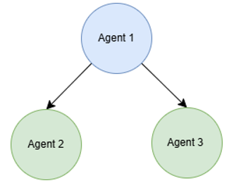
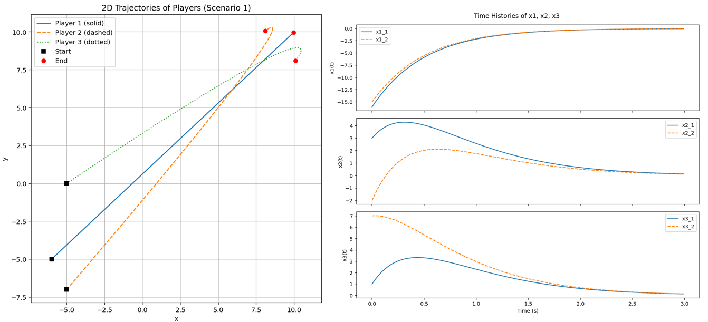
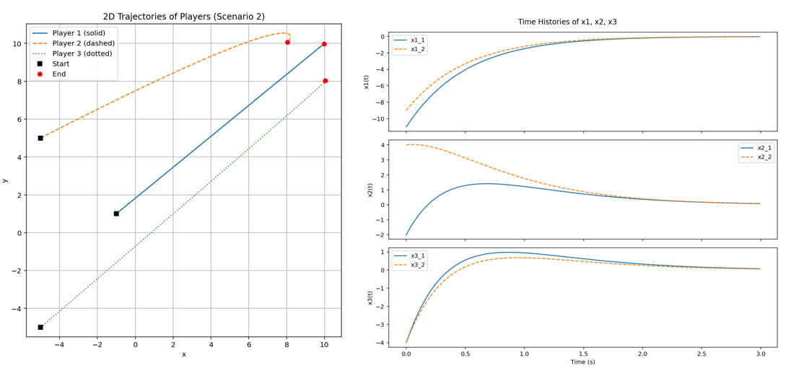

Presented Mylvaganam & Astolfi's framework for solving N-player differential games under decentralised, neighbour-only communication, worked through the Hamilton-Jacobi-Bellman derivation and its Lyapunov-based stability proof, and reproduced the linear-quadratic case in a 3-agent MATLAB simulation across two initial-condition scenarios.
A differential game involves two or more players whose decisions evolve a shared dynamical system over time, with each player trying to optimise their own payoff while knowing the other players are doing the same. A natural example is a swarm of drones trying to maximise area coverage while minimising collision risk with each other.
Classical differential game theory typically assumes every player has full knowledge of every other player's goals and strategies — but this assumption breaks down in practice. A player may not even know other players exist; communication may be limited, expensive, or simply unavailable. This paper tackles the harder, more realistic version of the problem: solving an N-player differential game when each player can only communicate with a subset of neighbours, in a decentralised framework.
The system state evolves under the combined influence of all N players' control inputs. Each player's communication is restricted to a fixed, possibly one-directional set of neighbours, and each player's strategy depends only on the current state — not full knowledge of every other player's actions. For non-neighbours, a player simply assumes a fixed, known input rather than reasoning about their actual strategy.
Each player minimises an infinite-horizon quadratic-in-control cost functional that penalises both its own state deviation and its own control effort, plus a weighted penalty on its neighbours' control effort — coupling each player's cost to its local neighbourhood without requiring global information.
Each player's optimal control is derived by setting up a Hamiltonian combining its cost functional with the system dynamics, then solving for the stationary point with respect to that player's control. This yields a feedback law for each player (and, separately, for its neighbours) expressed in terms of the gradient of that player's value function.
Substituting these optimal feedback laws back into the Hamilltonian-Jacobi-Bellman equation and separating neighbour from non-neighbour terms produces a coupled partial differential equation for each player's value function.
The paper's main theorem states that if a solution to this coupled system of PDEs exists, and the sum of the individual value functions is positive definite, then the resulting feedback strategies asymptotically stabilise the closed-loop system to the origin — provided a technical inequality coupling all players' value-function gradients holds everywhere.
The proof itself is a clean Lyapunov argument: define a candidate Lyapunov function as the sum of all players' individual value functions, take its derivative along the closed-loop trajectories, substitute in each player's PDE to eliminate the dynamics term, and show the result is negative — which is exactly what the paper's key inequality guarantees. This directly mirrors classical Lyapunov stability theory, but assembled from N coupled, locally-computed pieces rather than one global function.
For the practically important case of linear dynamics and quadratic costs, the general PDE collapses into a system of coupled algebraic Riccati equations (AREs) — one per player, each depending on its neighbours' Riccati solutions. Solving these AREs gives each player's optimal feedback gain directly, with no online optimisation required once the Riccati equations are solved offline.
To validate the theory, a 3-agent formation control scenario was reproduced in MATLAB. Agent 1's objective is to reach a fixed target position; Agents 2 and 3 aim to maintain fixed relative offsets from Agent 1, communicating only with Agent 1 and not with each other (a star-shaped communication topology). Collision avoidance between agents was not considered. The state was constructed as the stacked position errors — Agent 1's offset from its target, and Agents 2 and 3's offsets from their desired relative positions — with each agent's velocity directly controlled by its own input.

Communication topology
Player-specific weighting matrices were chosen to reflect each agent's priority (Agent 1 weighted most heavily on reaching the target; Agents 2 and 3 weighted on maintaining formation), and the corresponding coupled algebraic Riccati equations were solved to obtain each agent's optimal feedback gain.

Scenario 1 — all three agents converge smoothly to the target formation

Scenario 2 — different initial positions, same convergent behaviour
In both scenarios — tested from different sets of initial agent positions — all three agents converged smoothly to the desired formation around the moving target, with all state errors decaying to zero, confirming the linear-quadratic feedback law derived from the coupled Riccati equations successfully stabilises the formation despite each agent acting only on local, neighbour-limited information.
This paper offers a genuinely useful bridge between classical differential game theory and the decentralised, communication-limited settings that real multi-robot systems actually operate under. The Lyapunov argument is elegant precisely because it composes from purely local value functions, and the linear-quadratic specialisation makes the approach immediately implementable via standard Riccati solvers rather than requiring a general PDE solve. The formation-control reproduction confirmed the theory holds in practice for a simple but representative multi-agent task.